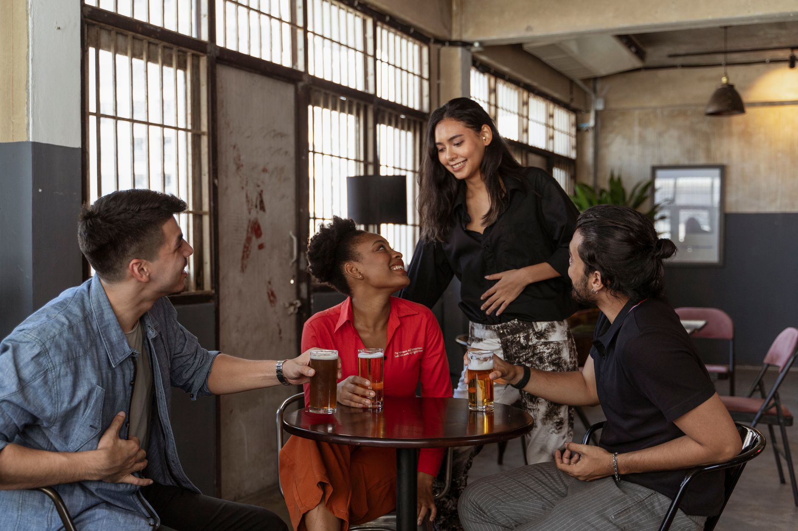
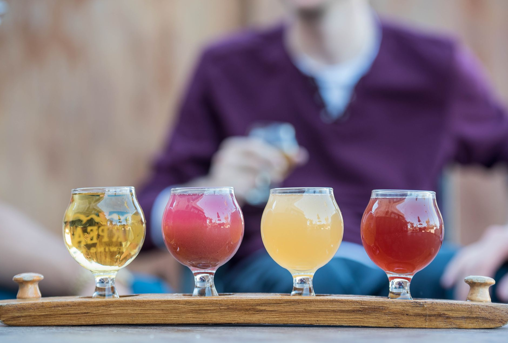

01pression & bouteilles
Bières artisanales
À la pression et à la bouteille, une sélection qui tourne : brasseurs locaux et pépites artisanales, toujours bien tirées.
Bar à bières & vins nature · Lyon 1er
Le bar de quartier des pentes de la Croix-Rousse : des bières artisanales bien tirées, des vins nature de vignerons, et des planches à partager entre gones.

Adresse
13 rue Terme
Lyon 1er · les pentes
Horaires
En soirée
du mardi au samedi (à confirmer)
Sur Google
Bien notés
par les habitués du quartier
@pintesagones
la vie du bar au quotidien
Au comptoir
Une carte vivante, qui change au gré des brasseurs et des vignerons. On vous guide, selon votre soif et votre humeur.
À la pression et à la bouteille, une sélection qui tourne : brasseurs locaux et pépites artisanales, toujours bien tirées.

Une cave de vignerons, vivante et sincère, dont les cuvées du Château Saint-Louis. On adore raconter ce qu'il y a dans le verre.

Charcuterie, fromages affinés et bons produits, à picorer à plusieurs autour d'un verre.

Un comptoir où l'on se sent vite chez soi : l'afterwork, les copains, ou refaire le monde jusqu'à la fermeture.
La cave
Sur nos étagères, des vins nature de vignerons qu'on aime. Parmi eux, les cuvées du Château Saint-Louis, un domaine familial du Sud-Ouest : des vins vivants et francs, à découvrir au verre comme à la bouteille.
Dites-nous ce que vous aimez, on trouve le bon.
L'ambiance



On en dit du bien
“ Super endroit, les bières sont de qualité, les propriétaires cherchent la qualité et la satisfaction client avant tout. Le rapport qualité-prix est dans les meilleurs de Lyon. ”
Un client, sur Google
Venir nous voir
Adresse
13 rue Terme, 69001 Lyon
Pentes de la Croix-Rousse · métro Hôtel de Ville
Horaires
Du mardi au samedi, en soirée
horaires précis à confirmer
Réservation & privatisation
Écrivez-nous sur Instagram @pintesagones69001